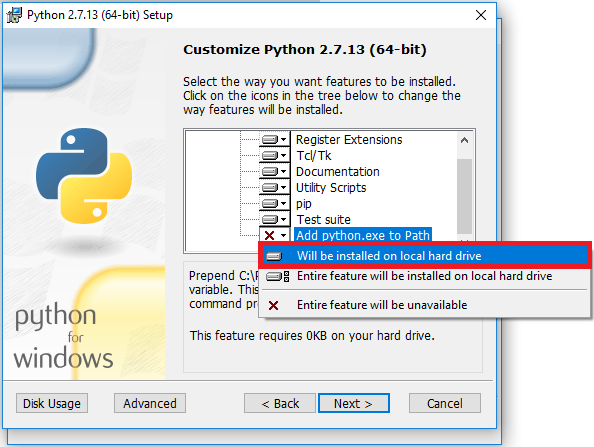
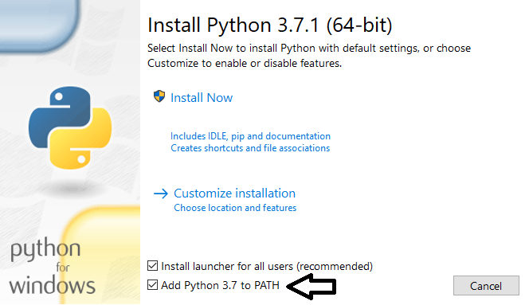

Install Python
Important information for users
There are two options to select: Python 2 (recommended) or Python 3.
Install Python 2 if you are using the next robots or devices:
- Nao
- Pepper
- Leap Motion
Install Python 3 if you are using:
- Vector
- Cozmo
- TensorFlow in Windows
Important information for developers
It is highly recommended to use the official installers of Python from the Python website . For programming in Python and Javascript, it is recommended to install and use Visual Studio Code .
Windows
Install Python 2 correctly in Windows
- 1.- Go to the official Python 2 download page
- 2.- Download Windows x86 MSI installer. Be sure that you downloaded the x86 (32 bits) version.
NEP can work with 64 bits version of Python but many robot software is only compatible with 32 bits
- 3.- Execute the installer downloaded
- 4.- Very important: when reaching the interface shown below, be sure of activate Add python.exe to Path - Will be installed on local hard drive.
If this step is not done correctly you will not able to install python packages using pip. You can reinstall Python 2.7 or add C:\Python27 to the PATH environment variable.

- 5.- Continue and finish the installation
Install Python 3 correctly in Windows (if not using ROS 2.0)
- 1.- Go to the official Python 3 download page
- 2.- Download the lastest Python 3 version
- 3.- Execute the installer downloaded
- 4.- Very important: when reaching next interface

- 5.- Continue and finish the installation
Install Python 3 using ROS 2.0 in Windows
Follow ROS 2.0 instructions avaliables here .
Mac OS X
Install Python 2 in MacOS
The next steps enable the use of NAO and Pepper robots on OSX
- Go to the official Python 2 download page .
- Download macOS 64-bit installer, execute this installer and follow the wizard using the default options.
Install Python 3 MacOS
- Install HomeBrew as indicated in Homebrew official page .
- Open a macOS Terminal prompt and write:
brew update
brew install python3